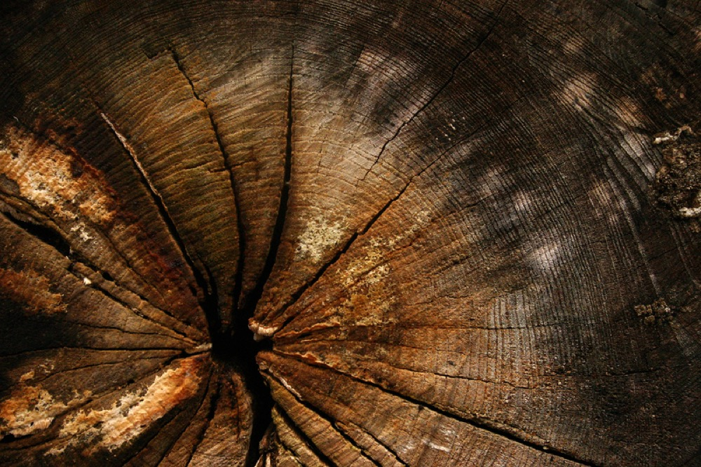

Lucy Compass
Ancient Wisdom.
Modern Clarity.
Discover your personal blueprint through authentic Chinese metaphysical wisdom.
Philosophy
Understanding Yourself.
Aligning Your Path.
Lucy Compass transforms ancient Chinese wisdom into practical guidance for modern decisions — not by predicting what will happen, but by clarifying who you are, how you move through change, and when to act.
Self
Read your natural tendencies, timing, and elemental balance.
Space
Understand how your environment shapes your energy and decisions.
Timing
Recognize which seasons of life call for movement, and which call for stillness.
The Five Elements
Five forces. One balance.
Every chart is a unique interplay of Wood, Fire, Earth, Metal, and Water. Select an element to learn what it governs.

Services
Guidance, precisely matched to your question.
01
BaZi Readings
Understand your personality, strengths, challenges, life cycles, career direction, and energetic patterns through your personal birth chart.
Learn more →02
Elemental Discovery
Discover your Five Element profile (Wood, Fire, Earth, Metal, Water), identify energetic imbalances, and understand what supports your natural alignment and growth.
Learn more →03
Feng Shui Guidance
Receive energetic insight into your home, workspace, or environment to help improve flow, harmony, abundance, and overall well-being.
Learn more →04
Compatibility Analysis
Explore relationship dynamics between partners, family members, friendships, or business collaborations through Chinese metaphysical compatibility insights.
Learn more →05
Annual Luck Forecast
Gain insight into your upcoming year's energetic shifts, opportunities, challenges, and timing patterns so you can make more aligned decisions with greater confidence.
Learn more →The Founder
Lucas
A cultural bridge between traditional Chinese wisdom and modern generations — raised inside a Chinatown institution, and shaped by a chance meeting that gave old knowledge a new language.
Read the full story-
1990s
Childhood in Lion Trading
Lucas grew up inside Lion Trading, a traditional Chinese cultural store in San Francisco Chinatown founded by his mother.
-
2010s
Searching for identity
Years between two cultures left Lucas asking what these traditions meant beyond the objects on the shelves.
-
2024
Meeting Master ICY
A chance introduction to Master ICY, a Feng Shui master and BaZi consultant from Hong Kong, reframed everything.
-
2025
Creating Lucy Compass
Lucy Compass was founded to carry this wisdom forward — with the clarity and craft it has always deserved.
In Practice With
Master ICY Chan
Feng Shui Master · BaZi Consultant · Metaphysical Strategist
Over a decade studying landscapes, Feng Shui, and Chinese metaphysics, Master ICY brings a rigor to this practice rarely found outside it.
"The purpose of metaphysics is not to predict the future, but to understand yourself, master timing, and make better choices."Meet Master ICY
Journal
Notes on wisdom, timing, and modern life.
What Is BaZi?
An introduction to the Four Pillars of Destiny and what it can and cannot tell you.
Understanding the Five Elements
Wood, Fire, Earth, Metal, and Water are a working model for how energy moves through a life.
The Philosophy Behind Feng Shui
Its real subject is the relationship between people and the spaces that shape them.
Begin With Lucy.
Find clarity.
Understand yourself.
Move forward with purpose.